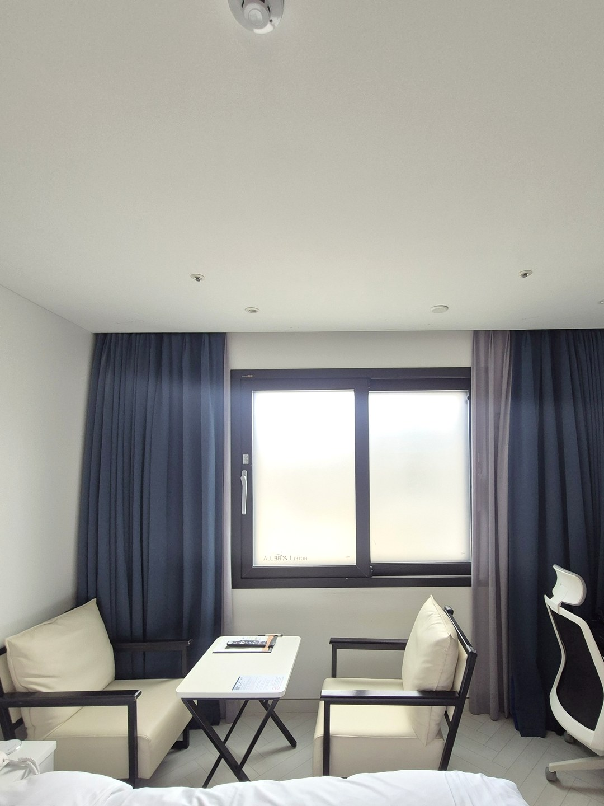
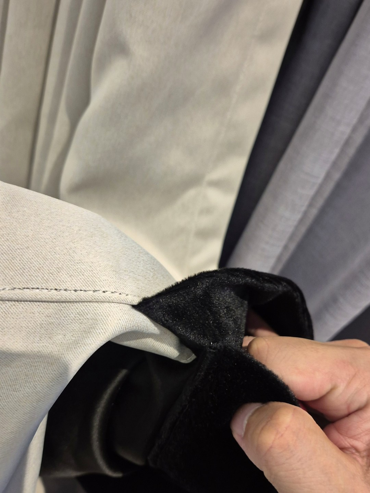
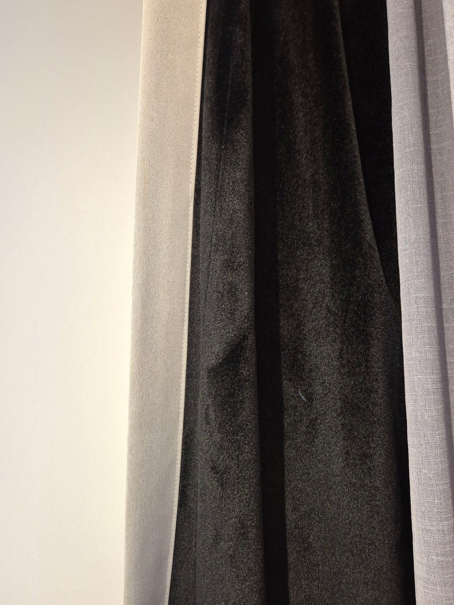
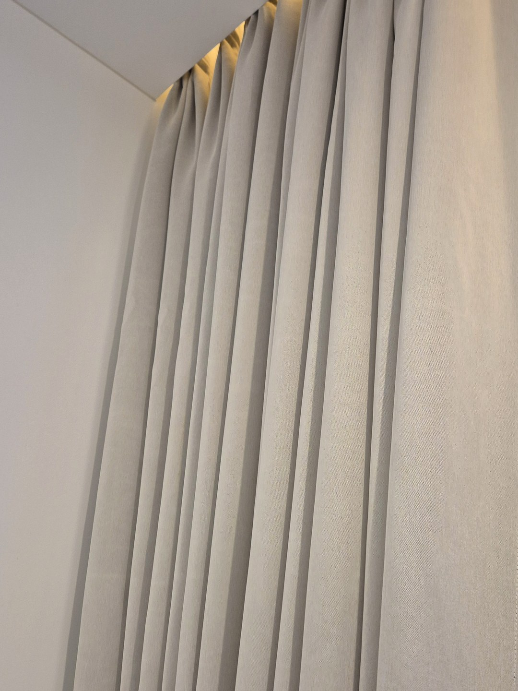
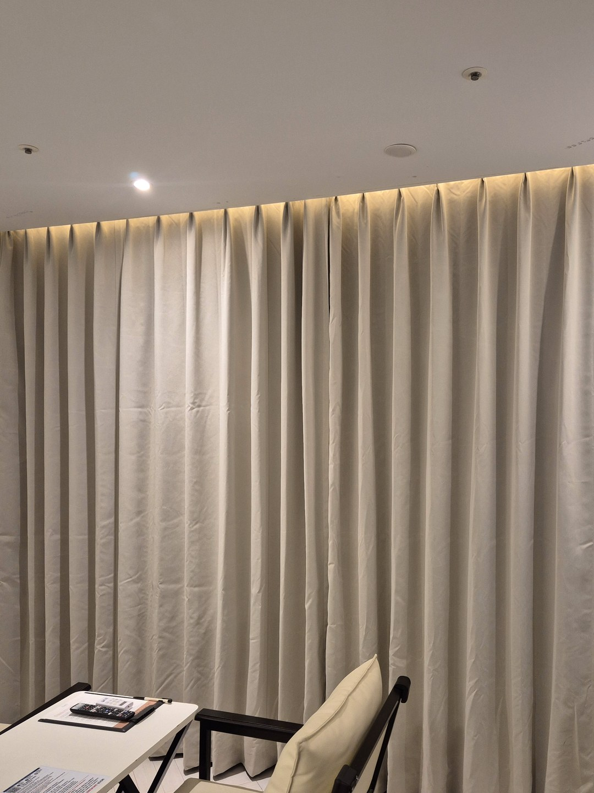
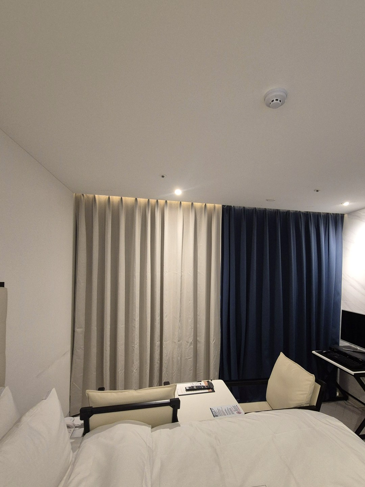
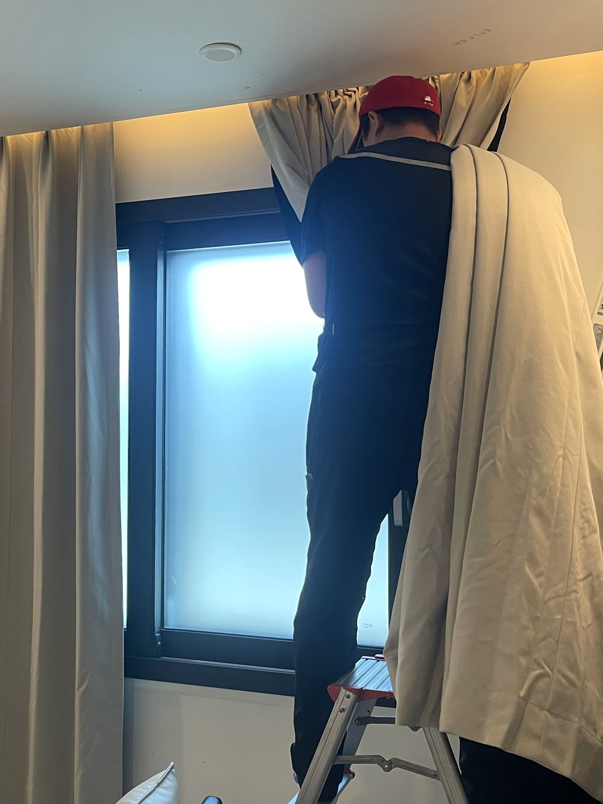
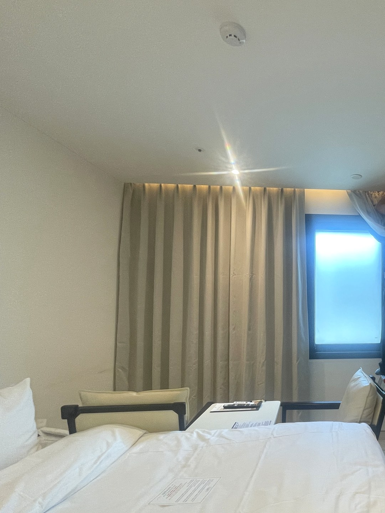
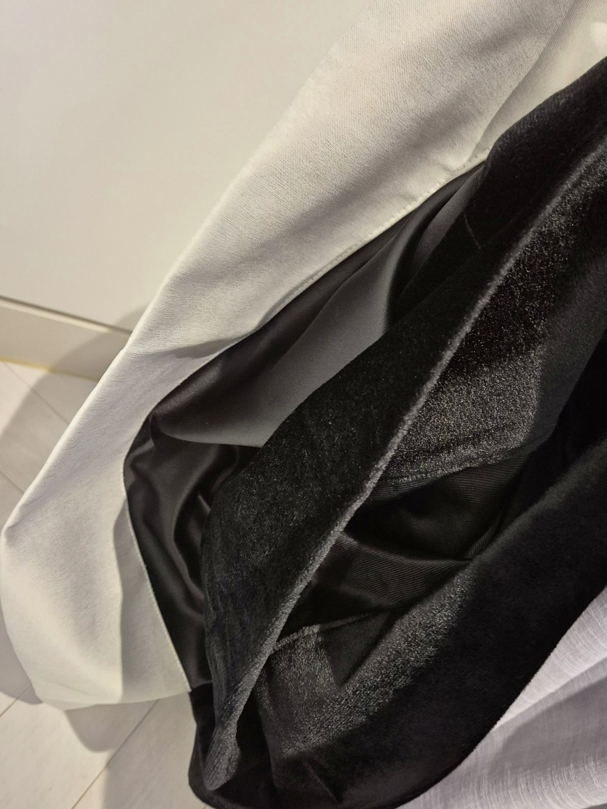
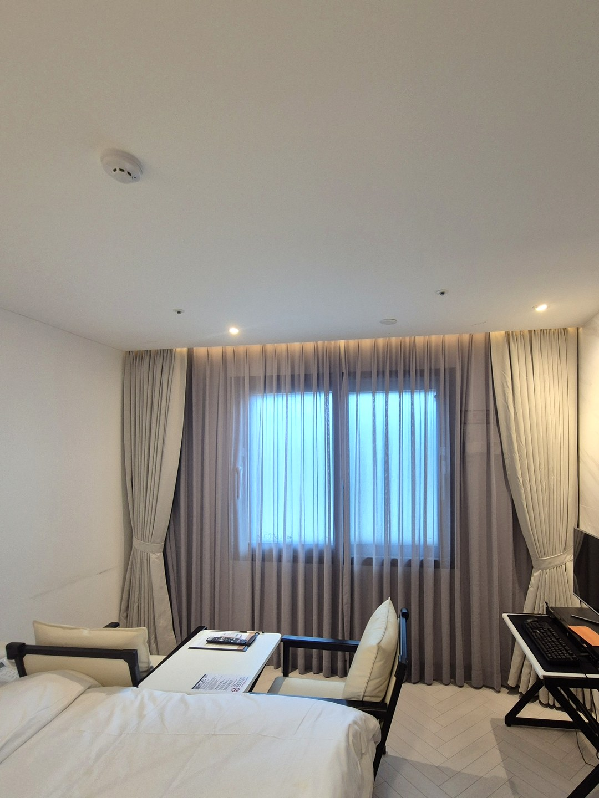

2026년 9월 8일 시공
대구 동성로 호텔 객실
방음 3중겹 암막커튼 시공후기

대구 동성로에 있는 호텔 객실 시공입니다. 기존에 걸려 있던 블루 계열 커튼을 걷어내고, 베이지 계열 암막 나비주름 커튼으로 바꿨습니다.
다만 이 현장은 색을 바꾸려고 부르신 게 아닙니다. 사장님이 하신 말씀은 이랬습니다. "밤에 손님들이 시끄럽다고 하세요."
동성로 한복판, 옆 건물이 클럽입니다
이 숙소는 동성로에서도 가장 번화한 자리에 있습니다. 그리고 바로 옆에 클럽이 있습니다.
낮에는 아무 문제가 없습니다. 문제는 밤입니다. 음악 소리가 창을 타고 객실 안으로 들어옵니다.
숙소에서 이건 단순한 불편이 아닙니다. 손님은 하룻밤 자러 온 사람입니다. 적응할 시간이 없습니다. 잠을 설치면 그게 그대로 후기에 남습니다. 청소를 아무리 잘해도 그 한 줄을 이깁니다.

먼저 말씀드릴 것 — 커튼이 모든 소리를 잡지는 못합니다
방음 상담에서 이 말씀부터 드립니다. 과장하면 결과가 기대에 못 미치기 때문입니다.
소리가 들어오는 길은 크게 둘입니다. 벽과 바닥을 타고 오는 것, 그리고 창을 통해 오는 것입니다.
벽을 타고 오는 소리는 커튼으로 못 잡습니다. 아랫집 발소리나 옆방 진동이 그렇습니다. 그건 공사를 해야 하는 영역입니다.
커튼이 잡는 것은 창으로 들어오는 소리와 방 안에서 울리는 소리입니다. 이 현장은 소리가 창으로 들어오고 있었습니다. 그래서 커튼이 답이 될 수 있는 경우였습니다.
창이 유리 한 장이 아니라 이중창이면 조건이 더 좋습니다. 창이 이미 한 번 막아주고, 커튼이 남은 것을 받습니다.
그래서 세 겹으로 만들었습니다
이 현장에 넣은 커튼은 한 장이 아닙니다. 원단 세 장을 겹쳐 하나로 가공했습니다.
첫 겹은 암막 원단입니다. 빛을 끊는 층입니다.
둘째와 셋째 겹은 벨벳입니다. 이 두 장이 소리를 맡습니다.

왜 벨벳이고, 왜 세 겹인가
소리는 공기의 떨림입니다. 얇은 원단 한 장은 그 떨림에 같이 흔들립니다. 같이 흔들리면 소리를 그대로 넘겨줍니다.
그래서 방음에서 중요한 건 원단의 무게와 밀도입니다. 무거우면 잘 안 흔들립니다.
벨벳은 표면 결이 촘촘합니다. 소리가 부딪히면 되튕기지 않고 결 사이로 들어가 먹힙니다. 매끈한 원단은 반대로 소리를 반사해서 방 안에 울림을 남깁니다.
겹쳐 쌓는 이유는 하나 더 있습니다. 겹과 겹 사이의 공기층입니다. 소리가 원단을 지나 공기를 지나 다시 원단을 만나면, 그때마다 한 번씩 힘을 잃습니다. 같은 무게라도 한 장 두꺼운 것보다 나눠서 겹친 쪽이 낫습니다.
세 겹으로 정한 것은 이 방 조건에 맞춘 것입니다. 더 겹칠수록 좋지만 무게가 늘고 커튼이 두꺼워져 창에서 튀어나옵니다. 객실은 넓지 않으니 거기서 멈추는 게 맞았습니다.

나비주름으로 뽑은 것도 이유가 있습니다
이 커튼은 나비주름입니다. 보기에 좋아서만은 아닙니다.
주름이 깊으면 실제 원단 면적이 늘어납니다. 창 폭이 2미터라도 원단은 그보다 훨씬 많이 들어갑니다.
그리고 표면이 평평하지 않고 굴곡이 생깁니다. 굴곡진 면은 소리를 한 방향으로 되쏘지 않고 흩습니다. 같은 원단이라도 평평하게 펴서 다는 것보다 결과가 낫습니다.

어둡게 하려고 검은색을 쓰지 않았습니다
기존 커튼은 블루였고, 새로 넣은 것은 베이지입니다.
방음과 암막을 동시에 잡으면 색이 무거워지기 쉽습니다. 그런데 차광은 원단 뒷면이 하고, 앞면 색은 방 분위기만 정합니다. 어둡게 하려고 검은색을 고를 이유가 없습니다.
숙소는 손님이 문을 열었을 때 첫인상이 남는 곳입니다. 베이지로 가면 조명을 켰을 때 방이 따뜻해 보이고, 침구 색과도 부딪히지 않습니다.

커튼만 좋아도 소용없습니다 — 레일과 폭
이 부분이 실제로는 원단만큼 중요합니다.
소리도 빛과 똑같이 틈으로 들어옵니다. 커튼 위, 좌우 끝, 아랫단입니다. 원단을 세 겹으로 만들어 놓고 위가 뚫려 있으면 그 위로 다 넘어옵니다.
그래서 원단을 정하기 전에 레일 위치부터 잡았습니다. 창틀 바로 위가 아니라 위쪽을 덮도록 올려 달고, 좌우로도 창보다 넉넉히 뺐습니다. 아랫단도 짧게 끊지 않았습니다.
무게 문제도 있습니다. 3중겹은 일반 커튼보다 훨씬 무겁습니다. 기존 레일에 그대로 걸면 처지거나 빠집니다. 레일과 브래킷을 하중에 맞는 것으로 바꿔 달았습니다.


객실이 여러 개일 때는 이렇게 나눕니다
호텔은 영업을 세우고 할 수가 없습니다. 그래서 객실 단위로 나눠서 돕니다.
빈 객실부터 먼저 하고, 다음 날 다른 객실로 넘어갑니다. 커튼은 창마다 새로 제작하기 때문에 실측을 한 번에 다 해두고 시공만 나누는 방식이 편합니다.
객실마다 창 크기가 조금씩 다른 경우가 많은데, 원단과 색은 통일하고 치수만 각각 뽑으면 방마다 다르게 보이지 않습니다.

객실에 따라서는 안쪽에 시어를 같이 넣었습니다. 낮에는 시어만 치면 빛이 들어오고, 밤에는 암막을 닫습니다. 하루 종일 두꺼운 커튼을 닫아두면 방이 답답해집니다.


정리하면
이 현장은 커튼으로 방음이 되는 조건이었습니다. 소리가 창으로 들어오고 있었기 때문입니다.
세 가지를 같이 맞췄습니다. 무겁고 결이 촘촘한 원단을 세 겹으로, 면적이 늘어나도록 나비주름으로, 그리고 틈이 남지 않도록 레일과 폭을 잡았습니다.
혹시 지금 숙소를 운영하시면서 소음 때문에 후기가 걱정이시라면, 먼저 소리가 어디로 들어오는지부터 보셔야 합니다. 창으로 들어오는 소리면 커튼으로 잡히고, 벽을 타고 오는 소리면 커튼으로는 안 됩니다.
창 사진 한 장만 보내주셔도 어느 쪽인지 말씀드립니다.
호텔·모텔 객실 방음과 암막은 따로 정리해 두었습니다. 호텔·모텔 방음커튼 안내와 방음커튼 가이드를 함께 보시면 도움이 됩니다.